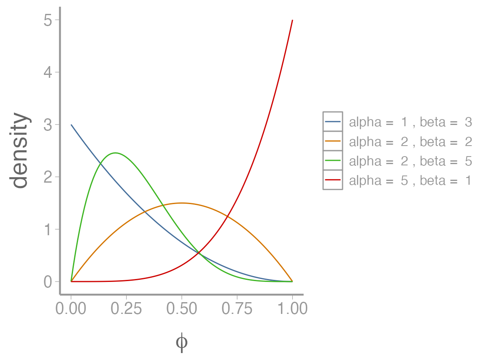
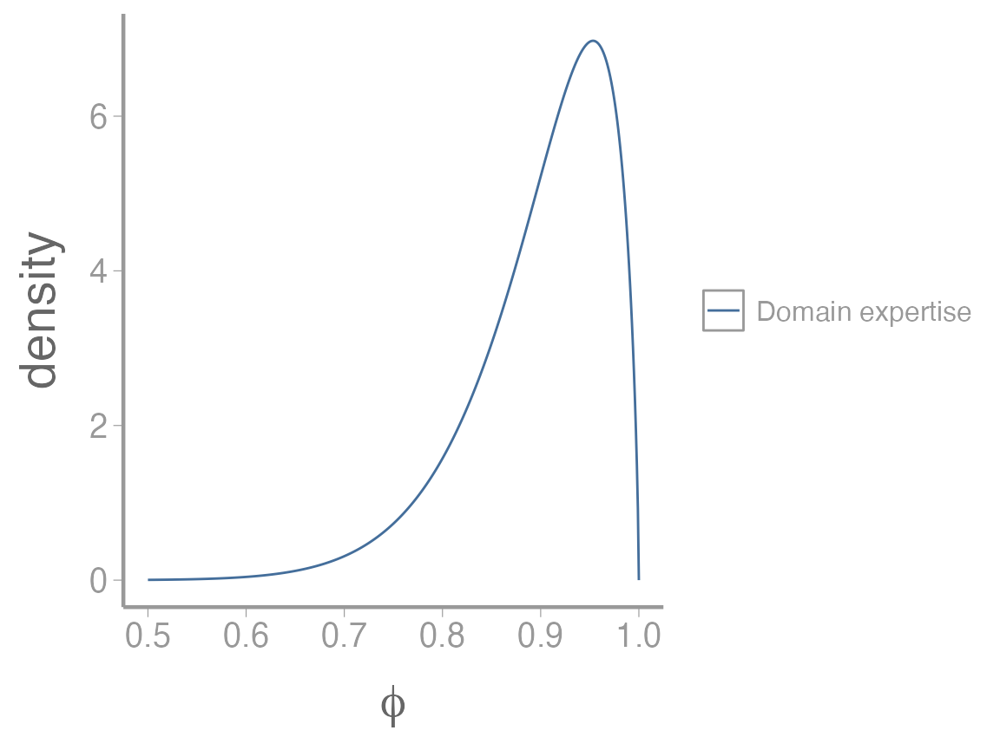
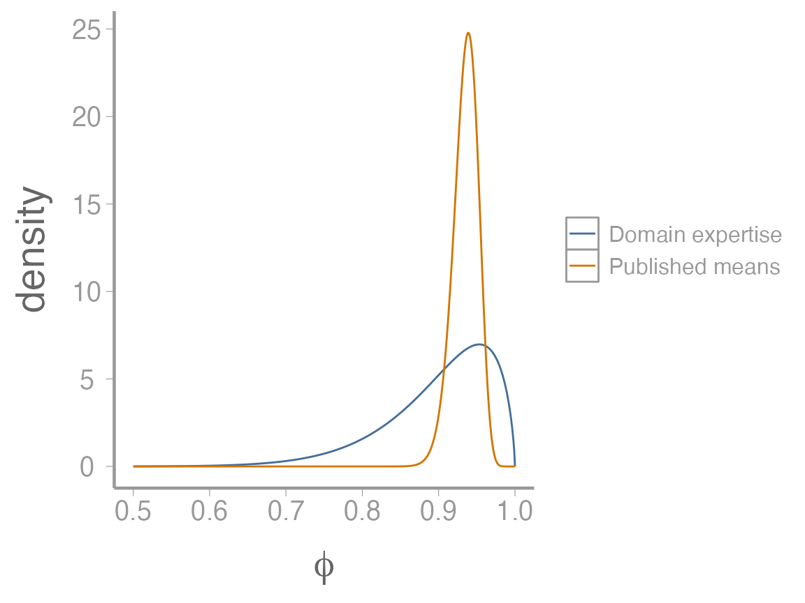
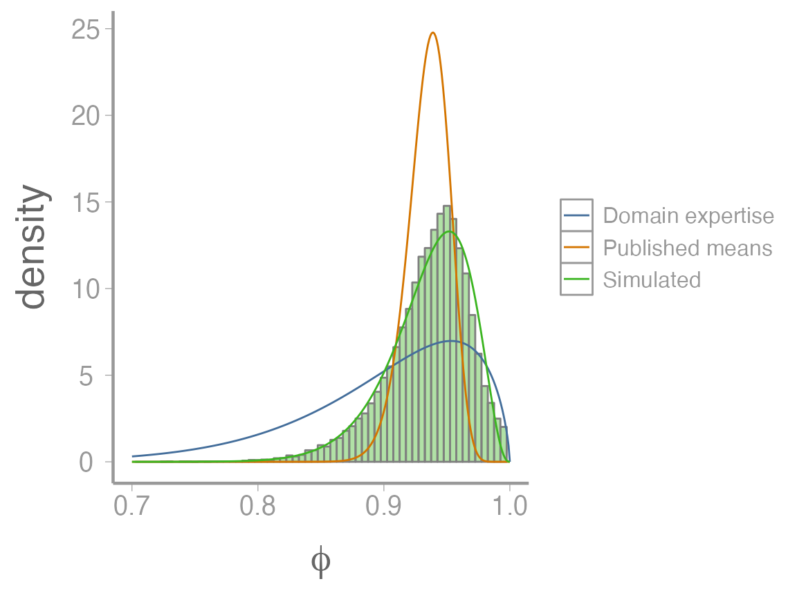
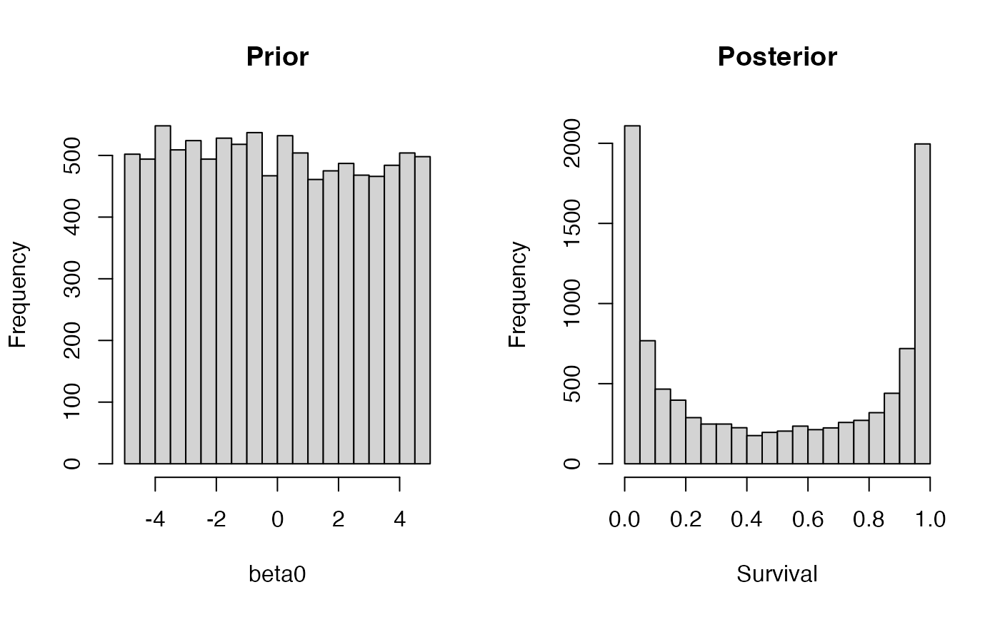

Lab5: Priors
priors.RmdGiven the practical and philosophical advantages of informative priors, why aren’t they more common in ecological models? As already discussed, one issue is cultural - many researchers are simply uncomfortable with the idea of informative priors. “If we can choose any prior we want and that choice influences our inferences, doesn’t that make the entire process too subjective?” “Shouldn’t we let the data speak for itself?” If one of these scientists is your adviser or the reviewer of your manuscript, you may be forced to use uninformative priors.
But another obstacle to using informative priors is that they can be hard to formulate. How do we translate our domain expertise into a probability distribution? How do we take a published estimate(s) of the parameter value and turn it (or them) into a probability distribution? The skills needed to translate prior knowledge into informative priors are not generally taught in the statistics classes taken by most ecologists.
In this activity, we’ll work through a few examples of ways to create informative priors from a variety of types of information.
Question and model development
One issue in many ecological studies is that it is logistically and financially difficult to collect data from a large number of individuals. As a result, vital rate estimates are often based on relatively small sample sizes, which can lead to high uncertainty and possibly spurious results.
It is precisely in these instances where Bayesian methods can shine - as we saw in lecture, the ability to incorporate previous knowledge of parameter values via informative priors is equivalent to increasing your sample size.
To explore different ways of generating informative priors, we will borrow data and some clever ideas from a recently published paper on the dynamics of Polar Bear (Ursus maritimus) populations in the Chukchi Sea (Regehr et al. 2018). For this example, we will focus on a subset of the full model, namely estimating annual survival of adult female bears.
In the model developed by Regehr et al. (2018), female survival was identifiable but estimates were imprecise using only the available data due to small sample sizes. As a result, the authors chose to develop informative priors based on published survival estimates from other populations. In this case, the authors were fortunate to have a handful of previous studies to lean-on and later in this exercise we will learn how they developed priors from those studies. But first, let’s assume there are no published studies but we still want the benefits of informative priors.
Example 1: Domain expertise
Even if we have no previous estimates of polar bear survival, we are not completely ignorant about survival of this species. We can use our domain expertise to develop a prior that improves upon the non-informative option.
Polar bears are a large, long-lived carnivore with a life expectancy of about 20-25 years (Ramsay & Stirling 1988). This simple fact suggests that adult survival must be pretty high - even with an annual survival probability of , an individual would only have a 36% probability of surviving 20 years. So survival probabilities much less than would be pretty surprising and we would be pretty suspicious of estimates less than (which would imply of female polar bears make it to 20 years of age).
Of course, polar bear populations in many areas are declining pretty quickly, suggesting that maybe adult survival rates could be lower than historical levels. So although we can be pretty that survival is high (e.g., ), we’re not super confident about the actual survival rate. With regards to our prior, this suggests we want a prior that puts most of the weight but is wide enough to reflect our uncertainty about the actual survival rates.
Turning our expertise into a prior
When modeling a continuous random variable that must be between 0 and 1 (i.e., a probability), the beta distribution is a natural choice. The shape of the beta distribution is governed by two parameters, and

We learned in lecture how to turn the mean and variance of a random variable into the parameters of a probability distribution using moment matching. For the beta distribution:
Given our domain expertise, a reasonable choice for the mean and
variance of the prior might be
and
(this may seem like a small variance but as you’ll see below, it
actually produces a relatively diffuse prior. Figuring out an
appropriate variance for probabilities is not easy so the best option is
usually to play with a few values and then explore the properties of the
resulting distribution to make sure it seems reasonable). Plugging those
values into equations 1 and 2 gives:
As always, we should visualize this distribution to make sure it matches what we think it should look like:
## Target mean and variance
mu <- 0.9
var <- 0.005
## Beta parameters
alpha <- mu^2 * ((1-mu)/var - (1/mu))
beta <- alpha * (1/mu - 1)
## Range of possible survival probabilities
phi <- seq(0, 1, by = 0.001)
beta_df <- data.frame(phi = phi,
density = dbeta(phi, alpha, beta),
Approach = "Domain expertise")
ggplot(beta_df, aes(x = phi, y = density, color = Approach)) +
geom_path() +
scale_x_continuous(expression(phi), limits = c(0.5, 1)) 
This seems reasonable given our understanding of the species biology. However, because we essentially made up the variance term to give a relatively diffuse prior, we would likely have to be very careful about how we justified this choice and would probably need to include some formal prior sensitivity analyses.
Example 2: Published studies
Polar bears are relatively well-studied so we would not be surprised to find at least a few published estimates of adult female survival. As it turns out, there are. Estimates from a few of these studies are included as a small data frame in the WILD8370 package:
data("SurvPriorData")Rather than rely solely on our domain expertise a better option would be to convert these published estimates into a prior distribution. There are many ways this could be done. Below we will explore several.
Approach 1: Mean and variance of published estimates
One reasonable way to turn the 6 published estimates into a single prior is to take the mean and the variance of the 6 estimates and then use moment matching to convert them into a single beta distribution.
Looks like our domain knowledge wasn’t too far off! Now we can covert these estimates into the and parameters as we did above:
## Beta parameters
alpha2 <- mu2^2 * ((1-mu2)/var2 - (1/mu2))
beta2 <- alpha2 * (1/mu2 - 1)
beta_df2 <- data.frame(phi = phi,
density = dbeta(phi, alpha2, beta2),
Approach = "Published means")
beta_df <- dplyr::bind_rows(beta_df, beta_df2)
ggplot(beta_df, aes(x = phi, y = density, color = Approach)) + geom_path() +
scale_x_continuous(expression(phi), limits = c(0.5, 1))
As you can see, even though the means of the two priors are not that different, the variance is much smaller on the prior based on published estimates, resulting in a much more informative prior (this prior suggests we’re much more sure about the plausible values of ).
Approach 2: Mean and variance of published estimates
One of the reasons the informative prior based on published survival estimates is so narrow is that it ignores the study-specific uncertainties associated with each survival estimate. One could argue that ignoring this source of uncertainty leads to a prior that is too confident in the possible values of .
However, incorporating study-specific uncertainty is not so straightforward. One clever approach is to convert estimates from each study into separate beta distributions, simulate survival estimates from each distribution, and then estimate “hyper-parameters” from all of the simulations together1. Understanding how this approach works is best done through example.
Let’s start by using moment matching to estimate the
and
parameters associated with each individual study. To do this, we’ll take
advantage of the way R performs operations on vectors so we
can just plug the columns from the data frame directly into our
formulas:
(alpha3 <- SurvPriorData$phi^2 * ((1-SurvPriorData$phi)/SurvPriorData$se^2 - (1/SurvPriorData$phi)))
#> [1] 111.86 41.40 27.25 131.60 131.60 81.90
(beta3 <- alpha3 * (1/SurvPriorData$phi - 1))
#> [1] 5.887 3.600 1.434 8.400 8.400 8.100Next, we will simulate a bunch of survival estimates from each distribution. The easiest way to do this is to create an empty matrix to hold all of the values and then loop through each study to simulate the survival probabilities:
## Number of simulated values from each distribution.
nSims <- 5000
## Empty matrix to store the simulated survival probabilities
sim_phi <- matrix(NA, nrow = nSims, ncol = dim(SurvPriorData)[1])
for(j in 1:dim(SurvPriorData)[1]){
sim_phi[,j] <- rbeta(n = nSims, alpha3[j], beta3[j])
}Now hopefully you can see why this approach is so clever. We now have 30000 plausible values of adult female survival probability that are consistent with published studies and reflect multiple sources of uncertainty about this vital rate2.
From these simulated values, we can now estimate “hyper-parameters” for a single beta distribution that will serve as our prior. First, we estimate the mean and variance of the simulated values:
You can see that the variance of these samples is much larger than for approach 1, reflecting the additional source of uncertainty in approach 2. Now we use the same moment matching code as before to generate and visualize the prior:
## Beta parameters
alpha4 <- mu3^2 * ((1-mu3)/var3 - (1/mu3))
beta4 <- alpha4 * (1/mu3 - 1)
beta_df3 <- data.frame(phi = phi,
density = dbeta(phi, alpha4, beta4),
Approach = "Simulated")
beta_df <- dplyr::bind_rows(beta_df, beta_df3)
sim_df <- data.frame(x = c(sim_phi))
ggplot() +
geom_histogram(data = sim_df, aes(x, stat(density)), alpha = 0.4,
color = "grey50",
fill = WILD6900_colors$value[WILD6900_colors$name == "success"],
binwidth = 0.005) +
geom_path(data = beta_df, aes(x = phi, y = density, color = Approach)) +
scale_x_continuous(expression(phi), limits = c(0.7, 1)) 
Questions to consider3
Informative vs vague: On one hand, we want posteriors to reflect (and be affected by) prior knowledge. On the other hand, why collect more data if we basically know the answer?
How to assess ‘sensitivity to the prior’: Ideally, we should test how sensitive our inferences are to the choice of prior distribution. Should this be quantified by a change in the posterior mean, standard deviation, etc? If the posterior is unaffected by the prior, why go through the trouble of using informative priors?
Process vs sampling noise: The studies used to create the priors reflect a range of conditions and population trajectories. In approach 1, we assume that the point estimates of survival reflect the process noise across populations. In approach 2, we use the uncertainty from each study to capture both the sampling and process uncertainty. Which sources of uncertainty should we care about when developing a prior?
Domain expertise: Incorporating sampling uncertainty may increased prior weight for survival values that conflict with our domain expertise (for example, values much lower than we think are plausible). However, these values are consistent with possible survival values from published studies. How should we treat priors that are at the boundary of our statistical and domain expertise?
Prior Predictive Checks
One issue with priors is that they can do unexpected things when they undergo transformations. This means that a prior might look diffuse but can accidentally be very informative because of how your model is written. See https://besjournals.onlinelibrary.wiley.com/doi/full/10.1111/2041-210X.13407 for a great paper on this.
For instance, let’s say that polar bear survival is a function of the age of the individual, with cubs having much lower survival than adults:
We might be tempted to use something simple like a uniform for both terms:
However, what does that imply about ? For instance, if is 0 and we have no data, looks like:
beta0 <- runif(10000, -5, 5)
par(mfrow = c(1,2))
hist(beta0, main = "Prior")
hist(plogis(beta0), main = "Posterior", xlab = 'Survival')
Uh-oh!
In Nimble, you can run your model without data and monitor the latent variables to double check that your priors are doing what you expect. This is called a Prior Predictive Check and is a very useful tool.
References
Ramsay, M.A. and Stirling, I., 1988. Reproductive biology and ecology of female polar bears (Ursus maritimus). Journal of Zoology, 214(4), pp.601-633.
Regehr, E.V., Hostetter, N.J., Wilson, R.R., Rode, K.D., Martin, M.S. and Converse, S.J., 2018. Integrated population modeling provides the first empirical estimates of vital rates and abundance for polar bears in the Chukchi Sea. Scientific reports, 8(1), p.16780.
Homework Questions:
- You are studying a population of gopher tortoises, but you don’t have a lot of data on survival. You want to model juvenile and adult survival as: . You comb through the literature and find the following information. Using this information, choose a prior for . Defend your choice of prior. (Note: you can choose to model as a random or fixed effect, but be sure to defend your choice.)
At both study sites, apparent survival of immature tortoises was significantly lower than for adult tortoises, averaging 82.4 ± 3.8% at Conecuh and 69.7 ± 9.1% at Green Grove (Tuberville et al 2014)
Additionally, annual survivorship of immature tortoises (73.8%, 95% CI = 56.3–86.1%) was significantly lower than that of adults (93.4%, 95% CI = 88.6–96.9%) (Howell et al 2019)
Quarterly apparent survival did not differ significantly between size classes, although point estimates were lower for small tortoises (91.6% ± 3.5, 95% CI: 81.6%–96.4%; n = 19) than for large tortoises (96.4% ± 2.5, 95% CI: 86.8%–99.1%; n = 13) (Stemle et. al 2024)
Apparent annual survival for adult tortoises averaged 0.98 ± 0.01 for all years excluding the first two (Fig. 4). […] Survival of immature tortoises was lower than that of adults and averaged 0.84 ± 0.05 across years. (Tuberville et al 2008)
The 2021 Species Status Assessment (SSA) for gopher tortoises used informed priors on juvenile and adult survival to model population viability across the Southeast USA. For juvenile tortoises, they used a beta distribution with a mean of 0.75 and a standard deviation of 0.06. For adult tortoises, they used a beta with mean 0.96 and a standard deviation of 0.03. Write out the two beta distributions they used in math form. Visually compare these distributions with the prior you chose in Question 1.
Imagine we have an intercept-only occupancy model where . We want to put an uninformative prior on but aren’t sure what will happen when it goes through the logit transformation. Use R to simulate each of the following priors 5000 times, and then graph each prior and the resulting posterior of in ggplot. Which ones, if any, seem reasonably uninformative?
- (shape, rate parameterization)
- (location, scale)
- On a 1-10 scale, with 1 being the worst week ever and 10 being the best, how would you rate this week’s content? What lingering questions/confusion about the lecture or lab do you still have?